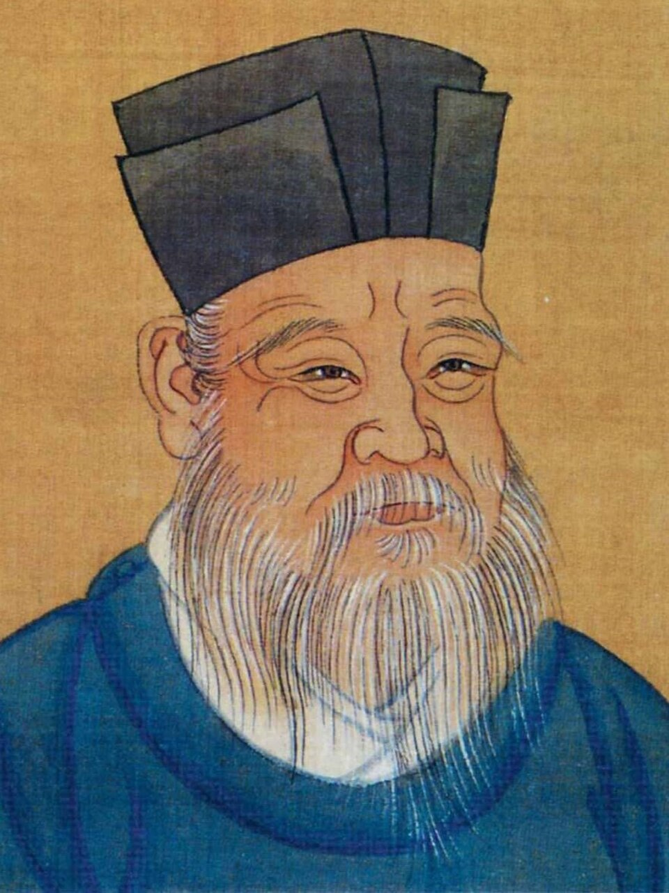

Who Was Zhu Xi?
Zhu Xi (1130–1200) was a Chinese philosopher, scholar, teacher, and one of the most influential thinkers of Neo-Confucianism during the Southern Song dynasty. He developed a comprehensive philosophical synthesis that brought together the ideas of earlier Confucian thinkers with major developments in Song-period philosophy, helping to shape the form that Confucian thought would take for centuries afterward.
Zhu Xi is especially known for his interpretation of the Four Books — the Great Learning, the Analects, the Mencius, and the Doctrine of the Mean. Through his editions, commentaries, and educational approach, these texts acquired a central position in the later Confucian tradition and eventually became fundamental to scholarly education and the civil service examination culture of imperial China.
His philosophy addressed major questions about human nature, morality, knowledge, self-cultivation, reality, and the structure of the natural world. Zhu Xi did not treat these subjects as completely separate areas of inquiry. For him, understanding the world, understanding human nature, and learning how to become a morally cultivated person were deeply connected parts of a single philosophical project.
Two of the most important concepts in Zhu Xi's thought are li, often translated as principle, pattern, or coherence, and qi, commonly translated as vital material force or psychophysical energy. Zhu Xi used these concepts to explain both the intelligible order of the cosmos and the diversity and changing character of the physical world. Their relationship also played an important role in his account of human nature and moral development.
Zhu Xi's importance extends far beyond his own lifetime. His philosophical synthesis became one of the dominant interpretations of Confucianism in later imperial China and exercised major influence throughout East Asia, particularly in Korea, Japan, and Vietnam. For this reason, Zhu Xi is widely regarded as one of the most significant philosophers in the history of the Confucian tradition and Chinese philosophy more broadly.
Zhu Xi: Quick Facts
- Name — Zhu Xi
- Chinese name — 朱熹
- Born — 1130
- Died — 1200
- Period — Southern Song dynasty
- Tradition — Neo-Confucianism
- Known for — Confucian philosophy, the Four Books, li and qi, human nature, self-cultivation, and the investigation of things
- Major philosophical concern — The relationship between moral cultivation, knowledge, human nature, and the patterned structure of reality
- Major influence — Chinese, Korean, Japanese, and Vietnamese intellectual traditions
Zhu Xi and the Song Dynasty: The Rise of Neo-Confucian Philosophy

Zhu Xi lived during the Southern Song dynasty, a period in which Confucian scholars were developing new philosophical responses to intellectual traditions associated with Buddhism and Daoism. Earlier Song thinkers had already begun constructing more systematic accounts of human nature, morality, the cosmos, knowledge, and the principles or patterns believed to structure reality.
The Song period was therefore an important age of intellectual renewal. Confucian thinkers did not merely attempt to repeat the teachings of the ancient classics; they sought to explain how those teachings could provide a comprehensive understanding of both human life and the larger natural order. Questions of self-cultivation, metaphysics, cosmology, education, and ethical practice became increasingly interconnected.
Zhu Xi brought together important ideas from earlier Song philosophers, including Zhou Dunyi, Zhang Zai, Cheng Hao, and Cheng Yi. His achievement was not simply to repeat their teachings but to organize major strands of Song Confucian thought into a broad and influential philosophical synthesis.
This synthesis became one of the most influential forms of Neo-Confucianism. Zhu Xi's interpretation of the Confucian classics shaped education and philosophical discussion in China for centuries, while his ideas later became deeply influential in Korea, Japan, Vietnam, and other parts of East Asia.
Why Is Zhu Xi Important in Chinese Philosophy?
Zhu Xi is important because he created one of the most influential philosophical syntheses in the history of Chinese philosophy. His thought connected questions about metaphysics and cosmology with questions about ethics, education, knowledge, political life, and the long Confucian project of moral self-cultivation.
His philosophy attempted to explain how human beings can understand the world and improve themselves while remaining faithful to the Confucian concern with moral relationships and social responsibility. For Zhu Xi, understanding reality and cultivating character were not completely separate activities because knowledge was expected to guide more appropriate and humane action.
Zhu Xi also gave a new intellectual structure to the study of the Confucian classics. His interpretation of the Four Books became particularly influential and eventually helped establish these texts as a central foundation of later Confucian education and scholarly training.
Because his ideas influenced both philosophical thought and major educational institutions, Zhu Xi's importance cannot be measured only by the originality of individual concepts. His larger achievement was the creation of a philosophical framework that shaped how generations of East Asian scholars understood Confucianism itself.
What Was Zhu Xi's Neo-Confucian Philosophy?
Neo-Confucianism was a major development within Chinese Confucian thought that emerged during the Song period. Its thinkers sought to deepen Confucian philosophy by addressing questions about human nature, morality, the cosmos, knowledge, and the relationship between the individual and the larger order of reality.
Zhu Xi became its most influential systematic philosopher. He drew upon earlier Confucian thinkers and the work of Northern Song masters while also responding to philosophical problems that had become especially important in an intellectual world shaped for centuries by Buddhist and Daoist traditions.
His Neo-Confucian philosophy therefore cannot be reduced simply to a political theory or a collection of moral rules. It includes a broader account of reality, human nature, knowledge, education, ethics, and self-cultivation, all of which Zhu Xi understood as closely connected.
At the center of his philosophical project was the conviction that human beings can become morally better through disciplined learning and practice. The study of the world, the interpretation of classical texts, reflection on one's own conduct, and participation in human relationships could all contribute to the gradual realization of a more fully cultivated moral life.
What Are Li and Qi in Zhu Xi's Philosophy?
One of the most important questions in Zhu Xi's philosophy concerns the relationship between li and qi. Li can be translated in different ways depending on context, including principle, pattern, order, coherence, or the intelligible patterning of things. Qi is commonly translated as vital material force, vital energy, material force, or psychophysical stuff.
Zhu Xi understood the world as an ordered reality in which things possess determinate patterns or principles while also existing through dynamic processes of material and vital transformation. The particular things and processes of the world are expressed through qi, while their intelligible patterns and normative structures are associated with li.
It is therefore misleading to treat li and qi as two completely separate substances in a simple sense. In Zhu Xi's mature philosophy, they are deeply interconnected and mutually implicated: concrete things are never encountered apart from qi, yet the patterns through which those things can be understood cannot simply be reduced to random material change.
This relationship also helps explain why Zhu Xi's philosophy connects metaphysics with ethics. The same conceptual framework used to discuss the ordered structure of the cosmos was also used to explain human nature, moral failure, self-cultivation, and the possibility of becoming a morally exemplary person.
What Does Li Mean in Zhu Xi's Philosophy?
The Chinese term li is often translated as principle, pattern, or order. In Zhu Xi's philosophy, however, no single English translation captures every use of the term. It refers broadly to the determinate patterns or coherences that characterize things, relationships, events, and processes.
Zhu Xi used the concept of li both in his account of nature and in his ethical philosophy. The world was not understood as a collection of completely unrelated events; things and relationships possess intelligible patterns that can be investigated and understood through serious learning and reflection.
Understanding li was also important for moral life. Recognizing the appropriate patterns involved in human relationships, responsibilities, and conduct was part of learning how one ought to act. Moral understanding therefore required more than memorizing rules because concrete situations had to be interpreted carefully.
The concept consequently connects Zhu Xi's metaphysical thought with his account of ethical cultivation. Knowledge of the patterns present in reality was not merely theoretical; it was expected to contribute to appropriate action, clearer judgment, and the gradual development of moral character.
What Does Qi Mean in Zhu Xi's Philosophy?
Qi is a major concept in Chinese philosophy and is often translated as vital material force, vital energy, or psychophysical stuff. These translations are only approximate because the traditional concept does not correspond exactly to a single modern Western scientific or philosophical term.
Zhu Xi used qi to explain the concrete, changing, and differentiated manifestations of the world. The physical cosmos and the particular characteristics of individual things were understood through processes involving the condensation, movement, transformation, and varying conditions of qi.
The condition and quality of a person's qi could affect how their basic moral nature was expressed in actual life. Differences in disposition, clarity of understanding, emotional tendencies, bodily conditions, and circumstances therefore helped explain why human beings do not always manifest goodness equally clearly.
Zhu Xi's account of qi is consequently closely connected with his philosophy of human nature and moral cultivation. Ethical development involves learning to overcome selfishness, partiality, and confused judgment so that the moral patterns associated with human nature can be expressed more clearly in one's thought and conduct.
Zhu Xi's Philosophy of Human Nature
Human nature was one of the central subjects of Zhu Xi's philosophy. Following the Mencian tradition, he maintained that human nature is fundamentally good while also attempting to explain why actual human behavior can so often depart from moral goodness.
Zhu Xi connected the basic goodness of human nature with li, while the particular condition of a person's qi could affect how that nature was expressed in concrete life. Human beings therefore possess the basis for moral goodness while still experiencing confusion, selfishness, excessive desire, and failures of judgment.
This framework allowed Zhu Xi to explain both the possibility of moral goodness and the reality of moral failure. The problem was not necessarily that human beings lacked the capacity for goodness, but that this capacity could become obscured or expressed imperfectly through the conditions of embodied and social existence.
Human beings therefore require cultivation. Learning, reflection, disciplined practice, reverent attentiveness, and appropriate action help a person develop the ability to recognize moral considerations more clearly and gradually bring one's conduct into closer harmony with the ethical patterns that Zhu Xi believed characterize human nature.
Zhu Xi on Self-Cultivation and Moral Development
Self-cultivation was central to Zhu Xi's interpretation of Confucian philosophy. The goal was not simply to acquire information or become intellectually knowledgeable but to develop the character, judgment, and understanding necessary for appropriate moral action.
Zhu Xi emphasized practices including reverent attentiveness, learning, reflection, and the investigation of things. These practices were intended to help a person develop a clearer understanding of the patterns involved in the natural world, human relationships, and particular moral situations.
An important feature of this approach is that moral development requires sustained effort. A person does not become wise merely by possessing correct ideas in the abstract; understanding must gradually become part of one's habits, dispositions, perceptions, and actual responses to other people.
Ethical cultivation therefore required both knowledge and practice. Understanding what is right was connected to becoming capable of recognizing what a particular situation requires and then actually acting appropriately rather than treating moral philosophy as an exercise separated from everyday life.
What Did Zhu Xi Mean by Investigating Things?
One of the best-known ideas associated with Zhu Xi is gewu zhizhi, commonly translated as "investigating things and extending knowledge." Zhu Xi gave this phrase a particularly important role in his account of learning and moral cultivation.
Zhu Xi interpreted this idea as requiring serious engagement with the world, classical learning, and the particular features of things and situations. Investigation was not merely passive observation or the collection of isolated facts; it was connected with developing the discernment required to understand patterns and make sound judgments.
The practice could include careful study of Confucian texts, attention to human relationships, reflection on concrete situations, and investigation of natural phenomena. Zhu Xi did not regard knowledge as something obtained only by looking inward because the world itself provided important material for learning and reflection.
In this sense, Zhu Xi's theory of knowledge has an important practical and ethical dimension. Knowledge should contribute to the ability to recognize what is appropriate, overcome confused judgment, and act correctly within the changing circumstances of human life.
What Are the Four Books According to Zhu Xi?
Zhu Xi is particularly famous for his work on the Four Books, which he compiled, edited, and commented upon as a coherent curriculum for Confucian learning. These texts eventually became central to later Confucian education and scholarly study.
- The Analects — sayings and discussions associated with Confucius and his students.
- The Mencius — teachings associated with Mencius and his development of Confucian moral philosophy.
- The Great Learning — a text concerned with learning, self-cultivation, ethical development, and social order.
- The Doctrine of the Mean — a text concerned with moral cultivation, human nature, and appropriate conduct.
Zhu Xi arranged these works into a curriculum that could guide students through major questions of moral development and Confucian learning. His commentaries did more than explain difficult words; they also interpreted the texts as resources for understanding and practicing the Confucian way of life.
His interpretation eventually helped establish the Four Books as a central foundation of later Confucian education. Through this curriculum, Zhu Xi exercised an influence far beyond his own writings, shaping how generations of students first encountered some of the most important texts of the Confucian tradition.
Why Were Zhu Xi's Four Books So Important?
Zhu Xi's interpretation of the Four Books gave later Confucian students a concentrated curriculum through which they could study moral philosophy, self-cultivation, human relationships, political responsibility, and the relationship between knowledge and practice.
The importance of the Four Books increased enormously when Zhu Xi's edition and commentarial tradition were adopted as the basis for the imperial examination system during the Yuan period. This gave his interpretation an institutional influence that extended far beyond the relatively small communities of philosophers and private scholars.
For centuries, aspiring scholar-officials encountered the Confucian tradition through educational systems strongly shaped by Zhu Xi's approach. His interpretation therefore became part of the intellectual formation of generations of educated people and helped define standards of classical learning in imperial China.
The influence of this curriculum eventually extended beyond China. Zhu Xi's interpretation of Confucianism became highly influential in Korea, Japan, Vietnam, and other parts of East Asia, although scholars in these regions also developed distinctive interpretations and philosophical traditions of their own.
Zhu Xi's Ethical Philosophy
Zhu Xi's ethics is closely connected with the Confucian ideal of cultivating a morally exemplary person. Ethical life involves developing appropriate dispositions, understanding moral patterns, and learning to act properly within the complex network of human relationships and changing circumstances.
For Zhu Xi, moral knowledge should not remain abstract. A person must learn to recognize the relevant features of concrete situations and understand what appropriate conduct requires. This makes ethical development an ongoing discipline of judgment rather than the simple application of a fixed rule to every possible circumstance.
The Confucian virtues and relationships inherited from earlier tradition therefore remained central to his thought. Family life, education, ritual practice, responsibility, and concern for others provided important contexts in which moral character could be developed and expressed.
This is why learning, investigation, reflection, reverence, and practice are all connected in Zhu Xi's ethical philosophy. The ultimate purpose of philosophical understanding was not merely to describe the good life but to help transform the person who pursues that understanding.
Zhu Xi's Philosophy of Knowledge
Zhu Xi believed that knowledge could be developed through disciplined study and investigation. Understanding reality requires attention to the particular features and patterns found in things, events, texts, relationships, and situations rather than relying only upon immediate intuition or personal opinion.
His approach to knowledge was closely connected with the Great Learning and the principle of investigating things to extend knowledge. Careful inquiry was expected to deepen a person's discernment and gradually reveal the patterns relevant to both understanding and moral action.
Classical learning was particularly important in this process. Zhu Xi regarded the Confucian classics as records of profound moral insight, but they were not intended merely to be memorized mechanically. Students were expected to study them carefully, reflect upon their meaning, and connect their lessons with actual life.
Knowledge was therefore not isolated from ethical life. Greater understanding should improve a person's ability to make sound judgments, recognize what is appropriate in particular circumstances, and behave in ways consistent with the continuing project of self-cultivation.
Zhu Xi's Philosophy of Nature and the Cosmos
Zhu Xi also developed a sophisticated philosophical account of the natural world. His cosmology drew upon earlier Song thinkers and traditions associated with the Book of Changes, yin-yang, and the five phases, incorporating these ideas into a broader account of an ordered and dynamically changing universe.
In his account, the world is characterized by ordered patterns expressed through the activity and transformations of qi. The concepts of li and qi therefore allowed Zhu Xi to connect the intelligible order or patterning of reality with the concrete and constantly changing phenomena of the natural world.
Human beings were not regarded as existing outside this larger order. The same cosmos that includes natural processes also provides the context within which human beings develop their physical dispositions, moral capacities, relationships, and understanding.
His philosophy of nature was not modern science. It was a philosophical cosmology intended to explain how the natural world, human beings, moral order, and the larger structure of reality could be understood as parts of an interconnected whole rather than as completely independent domains.
Zhu Xi, Taiji, Yin-Yang, and the Five Phases
Zhu Xi's philosophical synthesis incorporated concepts associated with taiji, yin-yang, and the five phases. These ideas provided an inherited cosmological vocabulary for thinking about the development, differentiation, interaction, and transformation of the natural world.
Zhu Xi drew especially on the work of earlier Song thinkers such as Zhou Dunyi. He interpreted cosmological concepts in a broader philosophical framework that connected the structure of nature with human nature, moral cultivation, and the patterns through which the many things of the world become intelligible.
Yin and yang described complementary patterns of dynamic interaction, while the five phases provided another framework for understanding transformation and differentiation within the natural world. These concepts were not isolated scientific theories in the modern sense but parts of a larger philosophical vocabulary inherited and developed within Chinese intellectual traditions.
The result was a comprehensive Neo-Confucian philosophy in which cosmology, metaphysics, ethics, and self-cultivation were closely related rather than treated as completely separate subjects. For Zhu Xi, understanding the larger order of reality could help illuminate the place and responsibilities of human beings within it.
Zhu Xi's Relationship to Confucius and Mencius
Zhu Xi regarded himself as working within the Confucian tradition rather than creating an entirely new philosophical tradition. Confucius and Mencius were particularly important to his understanding of moral education, human development, learning, and the possibility of becoming a morally exemplary person.
Zhu Xi's account of human nature was strongly influenced by Mencius, especially the idea that human nature is fundamentally good and contains the capacity for moral development. Zhu Xi attempted to explain this inherited claim within a more systematic account of li, qi, mind, and cultivation.
Confucius remained equally important as a model of learning and moral practice. Zhu Xi's extensive work on the Analects helped make Confucius's teachings central to his educational program and to his interpretation of the practical meaning of Confucian self-cultivation.
At the same time, Zhu Xi developed these earlier Confucian ideas into a much broader philosophical system involving metaphysics, cosmology, epistemology, ethics, education, and self-cultivation. His project was therefore both an interpretation of the classical tradition and a major philosophical development within that tradition.
Zhu Xi and Buddhism and Daoism
Zhu Xi lived in an intellectual environment strongly influenced by both Buddhism and Daoism. These traditions had played major roles in Chinese intellectual and religious life for centuries and had developed sophisticated accounts of reality, the mind, spiritual practice, and human transformation.
Zhu Xi was critical of Buddhism and Daoism as philosophical alternatives to Confucianism, particularly when he believed their teachings directed attention away from the ethical responsibilities of human relationships and social life. Nevertheless, the intellectual environment created by those traditions formed an important part of the background against which Song Neo-Confucianism developed.
Zhu Xi himself had encountered Buddhist and Daoist ideas during his intellectual development before becoming firmly committed to the Confucian tradition. Modern scholarship therefore recognizes that his philosophical environment was more complex than a simple separation between completely isolated traditions.
Zhu Xi's philosophy can consequently be understood partly as an effort to strengthen and renew Confucianism by giving it a comprehensive account of reality, human nature, morality, knowledge, and self-cultivation while maintaining the distinctive Confucian emphasis on ethical relationships and active participation in human society.
Zhu Xi's Main Philosophical Ideas
Zhu Xi's philosophy contains many interconnected ideas. Rather than functioning as isolated doctrines, his major concepts form part of a larger attempt to explain reality, human nature, knowledge, and moral development as dimensions of a single philosophical system.
Neo-Confucian Philosophy
Zhu Xi developed one of the most influential systematic forms of Chinese Neo-Confucian philosophy, bringing together important ideas from earlier Song thinkers while presenting them as part of a coherent account of the cosmos, human life, and moral cultivation.
Li and Qi
He developed a sophisticated account of li, often understood as principle, pattern, or intelligible order, and qi, the vital material force through which concrete things and changing phenomena are manifested. Their relationship became central to his explanations of both nature and human existence.
Human Nature
Zhu Xi held that human nature is fundamentally good while explaining differences in actual moral conduct through the conditions in which that nature is expressed. Moral failure does not eliminate the possibility of goodness but makes self-cultivation necessary.
Self-Cultivation
Moral development requires learning, reflection, reverence, investigation, and disciplined practice. The purpose of cultivation is the gradual transformation of one's understanding, character, and ability to act appropriately in real human situations.
Investigation of Things
Zhu Xi emphasized investigating things and extending knowledge as a way of developing understanding and ethical discernment. Careful inquiry into texts, situations, relationships, and the world itself was part of the broader search for clearer judgment.
The Four Books
His editions and commentaries on the Four Books became foundational to later Confucian education. Their eventual adoption within the examination tradition gave Zhu Xi's interpretation an extraordinary influence on the intellectual history of China and East Asia.
What Did Zhu Xi Write?
Zhu Xi was a prolific scholar whose surviving intellectual legacy includes philosophical discussions, commentaries, correspondence, essays, lectures, poetry, and other literary and scholarly works. The range of this material reflects his interest in philosophy, classical learning, education, history, and the practical problems of moral cultivation.
His intellectual legacy is also preserved through records of his conversations with students and followers. These materials are especially important because they reveal a philosopher engaged not only in constructing general theories but also in discussing concrete questions about learning, conduct, interpretation, and everyday practice.
Commentaries on the Four Books
Zhu Xi's commentaries on the Analects, Mencius, Great Learning, and Doctrine of the Mean were among his most influential works. They presented the Four Books as an interconnected curriculum and helped establish a particular interpretive framework that later became central to Confucian education.
Collected Writings
His broader writings include philosophical discussions, letters, essays, poetry, records of teaching, and reflections on classical and contemporary issues. Together, these materials show that Zhu Xi's thought was much broader than the simplified doctrines for which he is often remembered through later educational traditions.
How Did Zhu Xi Influence Chinese Philosophy?
Zhu Xi's influence extended far beyond his own lifetime. His interpretation of Confucian philosophy became increasingly important in later Chinese education, scholarship, and examination culture, helping establish a powerful intellectual tradition that continued for centuries.
His influence was especially strong because his philosophy combined a comprehensive theoretical system with a practical curriculum of learning and self-cultivation. Students could encounter his thought through philosophical writings, commentaries on classical texts, educational institutions, and traditions of scholarly interpretation.
His ideas also spread to Korea, Japan, and Vietnam, where scholars adapted Zhu Xi's Neo-Confucian philosophy to their own intellectual, social, and political contexts. His influence therefore became part of a larger East Asian history rather than remaining confined to China alone.
Because of this wide and long-lasting influence, Zhu Xi is considered one of the most important philosophers in the history of later Chinese Confucianism. His thought continued to inspire both followers and critics, and later philosophers often defined their own positions partly through engagement with his powerful philosophical synthesis.
Zhu Xi and the Chinese Imperial Examination System
One reason Zhu Xi became so influential was the later institutional importance of his interpretation of the Confucian classics. His philosophical influence was reinforced when his approach became connected with the educational structures through which scholar- officials were trained.
His edition of the Four Books became the basis of the curriculum for the imperial examinations during the Yuan dynasty and remained highly influential within the examination tradition for centuries. This development effectively gave Zhu Xi's interpretation an official and institutional importance far beyond his original community of students.
The consequences were enormous. Generations of aspiring scholar-officials studied the Confucian tradition through texts and commentaries strongly shaped by Zhu Xi's approach, making his interpretation part of the intellectual culture of imperial China.
This institutional success also had limitations. Later students often encountered Zhu Xi primarily through examination-oriented study rather than through the full range of his philosophical writings, dialogues, and investigations. As a result, later images of Zhu Xi sometimes simplified a thinker whose surviving work is considerably broader and more complex than a single official curriculum. :contentReference[oaicite:1]{index=1}
Zhu Xi's Legacy in East Asian Philosophy
Zhu Xi's Neo-Confucian philosophy became one of the major intellectual traditions of East Asia. His writings and interpretations influenced generations of scholars who developed Confucian philosophy within different cultural, political, and educational settings.
In Korea, Japan, and Vietnam, thinkers engaged seriously with Zhu Xi's interpretations while also developing their own philosophical positions. His influence therefore formed part of a larger transnational history of Neo-Confucian thought rather than producing identical intellectual traditions everywhere it was received.
Zhu Xi also remained an important figure for later philosophical debate. Thinkers who disagreed with aspects of his approach often nevertheless had to respond to the questions and conceptual framework that his philosophical synthesis had made central to later Confucian discussion.
His legacy remains important because his philosophy brought together questions that are often treated separately: What is reality? What is human nature? How can we acquire knowledge? How should we live? And how can moral cultivation transform both individuals and society? Zhu Xi's enduring importance lies partly in his attempt to answer these questions within one interconnected philosophical vision.
Zhu Xi Philosophy Explained Simply
Zhu Xi was a major Chinese Neo-Confucian philosopher who wanted to understand how reality, human nature, knowledge, and morality fit together. He believed that philosophy should not only explain the world but also help human beings become wiser and morally better.
He argued that reality has intelligible patterns, expressed through the concept of li, while the concrete and changing world is manifested through qi. Human beings have a fundamentally good nature, but this goodness is not always expressed clearly in actual life and therefore requires education and moral cultivation.
Zhu Xi believed that people should learn through careful study, investigation, reflection, and disciplined practice. Knowledge should help a person understand both the world and the moral demands of particular situations, making philosophy closely connected with the practical task of living well.
- Philosophical tradition: Neo-Confucianism
- Key concepts: Li and qi
- View of human nature: Fundamentally good, but affected in its expression by conditions and dispositions
- Method of learning: Investigation, study, reflection, and self-cultivation
- Important texts: The Four Books
- Historical importance: One of the most influential philosophers of later Chinese Confucianism
A Famous Idea Associated with Zhu Xi
Investigate things and extend knowledge.
Frequently Asked Questions About Zhu Xi
Who was Zhu Xi?
Zhu Xi was a Chinese philosopher and scholar of the Southern Song dynasty who became one of the most influential thinkers of Neo-Confucianism.
What was Zhu Xi famous for?
Zhu Xi is famous for his Neo-Confucian philosophy, his interpretation of the Four Books, his theories of li and qi, his philosophy of human nature, and his emphasis on moral self-cultivation.
What is Zhu Xi's philosophy?
Zhu Xi's philosophy is a systematic form of Neo-Confucianism that connects metaphysics, cosmology, human nature, ethics, knowledge, education, and self-cultivation.
What is Zhu Xi's view of human nature?
Zhu Xi followed the Mencian tradition in holding that human nature is fundamentally good, while explaining that the expression of this nature can be affected by a person's particular condition, environment, and dispositions.
What are li and qi in Zhu Xi's philosophy?
Li refers broadly to principle, pattern, or order, while qi refers to the vital material force through which concrete things and processes are expressed. Zhu Xi treated the two as deeply interconnected aspects of reality.
What are the Four Books associated with Zhu Xi?
The Four Books are the Analects, the Mencius, the Great Learning, and the Doctrine of the Mean. Zhu Xi edited and commented on these works, helping establish them as central texts in later Confucian education.
What did Zhu Xi mean by investigating things?
Zhu Xi associated investigating things with extending knowledge. Investigation involved learning, examining things and situations, understanding their patterns, and developing the discernment required for appropriate action.
Was Zhu Xi a Confucian philosopher?
Yes. Zhu Xi was a major Confucian philosopher and is one of the most important figures in the development of Neo-Confucianism.
Did Zhu Xi believe human beings were naturally good?
Zhu Xi followed Mencius in affirming the fundamental goodness of human nature, while explaining moral differences through the conditions in which human nature is expressed.
Why is Zhu Xi important today?
Zhu Xi remains important because his philosophy offers a major historical account of the relationship between human nature, knowledge, morality, self-cultivation, and the structure of reality. His thought also played a major role in shaping Confucian intellectual traditions across East Asia.
Related Chinese Philosophers
Zhu Xi belongs to a long tradition of Chinese philosophy. Explore thinkers who developed different approaches to ethics, human nature, politics, metaphysics, and the nature of reality.
Philosophy Branches Connected to Zhu Xi
Zhu Xi's philosophy connects strongly with metaphysics, epistemology, ethics, and the philosophy of human nature. His investigation of reality and knowledge also connects with broader questions about how human beings understand the world and cultivate themselves.
Why Zhu Xi Still Matters
Zhu Xi transformed the study of Confucian philosophy by developing a comprehensive system that connected human nature, ethics, knowledge, cosmology, and self-cultivation.
His concepts of li and qi, his interpretation of the Four Books, and his emphasis on investigating things and extending knowledge became central features of later Neo-Confucian thought.
His influence extended across China and throughout East Asia, making Zhu Xi one of the most important philosophers for understanding the development of later Chinese and Neo-Confucian philosophy.
Explore Great Philosophers